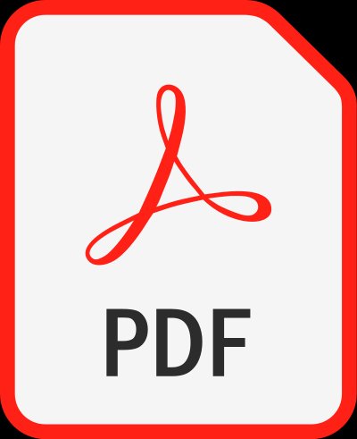

WINTER VOLUNTEERS
Serving Middlesex County, New Jersey
Attention Disabled Persons & Senior Citizens: NO computer or Internet access is required to take advantage of the snow removal service.
If you, or someone you know, would prefer to register for free snow clean-up via regular mail instead of online, a paper application is available. Please feel free to share copies of the paper application with anyone who may benefit from the service offered.
All requests that are received by mail, email, fax, or telephone are usually processed the same day.
Download, Print, & Mail the Application.
Click on the PDF logo to download the registration application in your preferred language:
|
 English |
Spanish |
Filipino |
Chinese |
Hindi |
|
Korean |
Gujarathi |
Portuguese |
Arabic |
Polish |
Send a request by email.
You may request an application in another language not listed above by sending an email to someone@example.com
Send a request by regular mail.
You may request an application by sending a letter or postcard to:
Registration
P.O. Box 100
Trenton, NJ 08601
Send a request by fax.
You may request an application by sending a fax to:
609-555-0101
Leave a voicemail.
You may request an application by calling toll-free:
609-555-0100
You must leave a voice-mail with your name, phone number, best time to be reached (within normal business hours), and preferred language if other than English